01Purpose and Scope
This procedure describes how to upgrade F5 BIG-IP software using the BIG-IP Configuration utility (GUI). It is written for a standalone device. The same steps apply to a High Availability (HA) pair, performed on one device at a time in the sequence described in HA Pair Upgrade Sequence.
All screenshots were captured in my own lab running BIG-IP Virtual Edition. Version numbers, disk names and timings will differ in other environments. License keys and device-specific licensing data have been redacted.
| Item | Value |
|---|---|
| Platform | BIG-IP Virtual Edition (lab) |
| Deployment | Standalone |
| Current version | BIG-IP 17.5.1.3 Build 0.0.19 — boot location HD1.1 |
| Target version | BIG-IP 21.1.0.4 Build 0.0.3 — boot location HD1.2 |
| Method | Configuration utility (GUI), with df -h and tmsh for pre-checks |
Before upgrading a production system, review the F5 release notes and upgrade documentation for your target version, confirm that the upgrade path is supported, and schedule the work in an approved maintenance window.
02Upgrade at a Glance
The upgrade runs in five phases. Durations are approximate, taken from the lab run, and will vary with platform, image size and network speed.
| Phase | What happens | Approx. time |
|---|---|---|
| 01 · Prepare | Backup, disk space and configuration checks | — |
| 02 · Install | Import and install the image | 20–30 min |
| 03 · License | Reactivate the license | 2–3 min |
| 04 · Boot | Activate the new boot location | 15–20 min |
| 05 · Validate | Verify and monitor | 24–48 hours |
Phases 1–3 (preparation, image installation and license reactivation) can be completed before the maintenance window. Only Phase 4 reboots the device.
03Prerequisites
| # | Prerequisite | Details |
|---|---|---|
| 1 | Back up the device | Create a UCS archive and download a copy to a secure location off the device. |
| 2 | Record object counts | If required, record the number of virtual servers, pools and nodes for comparison after the upgrade. |
| 3 | Confirm support status | Check whether the device is covered by an active F5 support contract. If it is, open a proactive support case before the upgrade. |
| 4 | Pre-stage the target image | Import and install the target software version on a new boot location ahead of the maintenance window. |
| 5 | Check disk space | Run df -h and confirm that /shared has enough free space to import and install the ISO. |
| 6 | Validate the configuration | Run tmsh load sys config verify and resolve any errors. |
04Pre-Upgrade Preparation
Download the target software image
Download the ISO for the target version from the official F5 Downloads portal. In this example the image is BIGIP-21.1.0.4-0.0.3.iso.
Record existing objects
If required, record the number of virtual servers (VIPs), pools and nodes, together with their availability status. This baseline is used during post-upgrade validation.
Create and download a UCS archive
- Navigate to System › Archives and click Create.
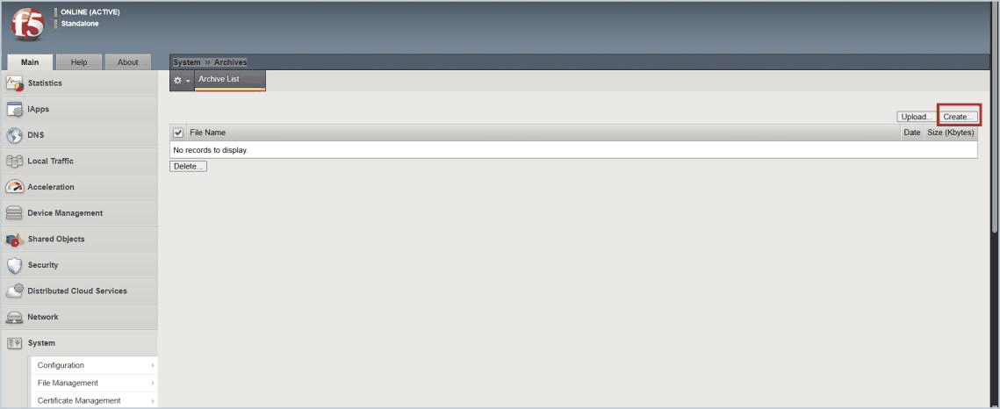
Figure 1 — Archive List – creating a new UCS archive - Enter a name for the archive in File Name and click Finished. Use a descriptive name, for example the hostname, “pre-upgrade” and the date.
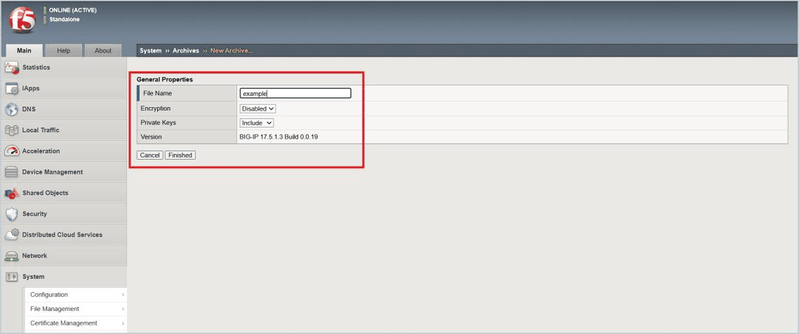
Figure 2 — New Archive – General Properties - When the archive has been created, click its file name. Under Archive File, click Download and save the UCS file to a secure location so it is available if a restore is required.
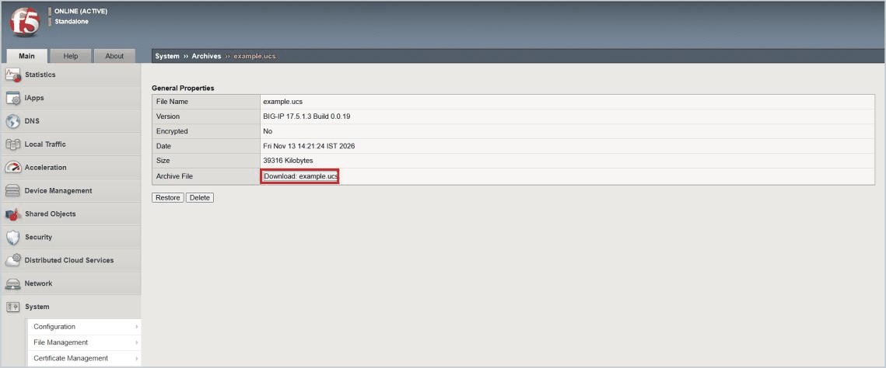
Figure 3 — Downloading the UCS archive
With Private Keys set to Include (the default), the archive contains the device’s SSL private keys. Store the downloaded file securely.
Verify free space on /shared
- From the command line, run
df -hand confirm that the/sharedfile system has enough free space to import and install the ISO.bash — BIG-IPdf -h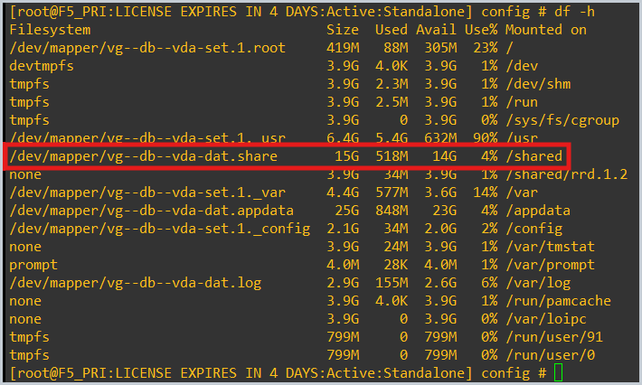
Figure 4 — Checking available space on /shared with df -h - If free space is low, delete old UCS archives or ISO images that are no longer required.
Validate the running configuration
- Run
tmsh load sys config verifyto check the configuration for errors without loading it.bash — BIG-IPtmsh load sys config verify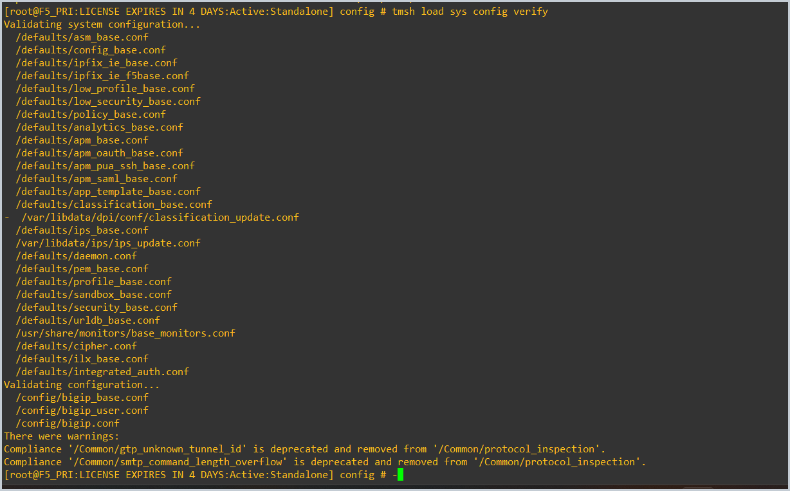
Figure 5 — Configuration validation output – warnings only, no errors - If any errors are reported, resolve them before moving to the next step. Warnings do not block the upgrade, as in the example above.
05Import and Install the Software Image
Use a software image downloaded from the official F5 portal only.
- Navigate to System › Software Management › Image List and click Import.
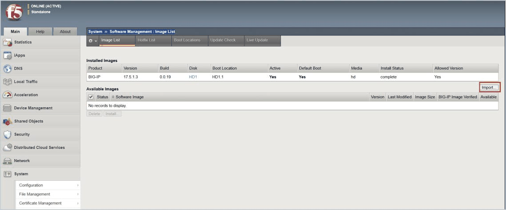
Figure 6 — Image List – importing a software image - Click Choose File, select the ISO on your local system and click Import. The import can take 10–15 minutes. When it completes, the image appears under Available Images.
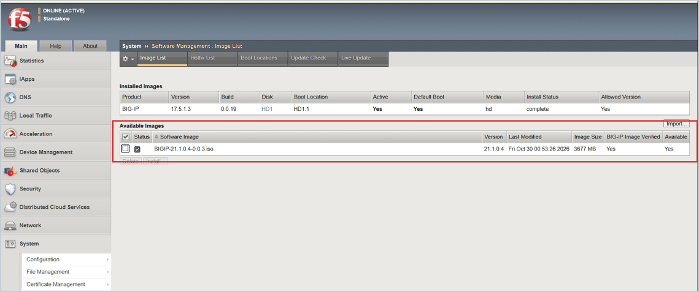
Figure 7 — Imported image listed under Available Images - Under Available Images, select the check box for the imported ISO and click Install.
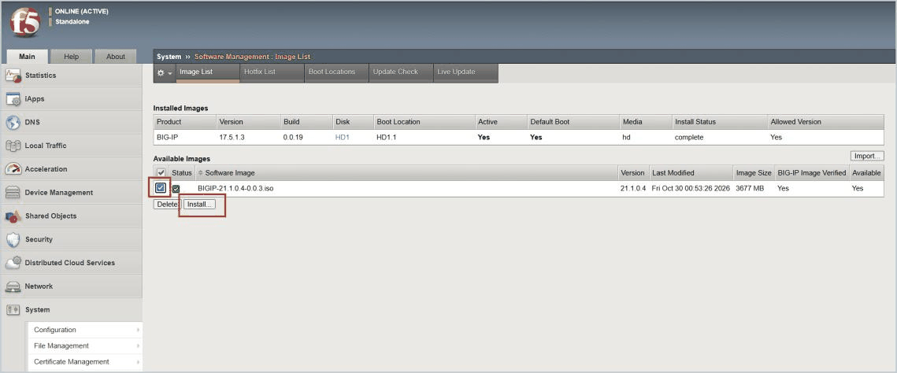
Figure 8 — Selecting the image and starting the installation - In the Install Software Image dialog, select the disk and specify the Volume set name. To use an existing volume, select it from the drop-down list. To create a new volume, enter a volume set name – for example, entering
2creates boot location HD1.2. Click Install. The installation can take 10–15 minutes.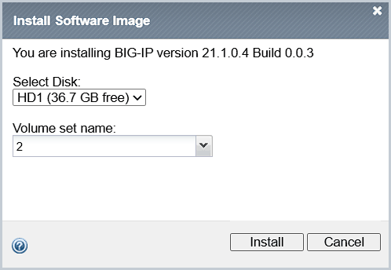
Figure 9 — Install Software Image dialog - When the installation finishes, the new version is listed under Installed Images with an Install Status of complete.
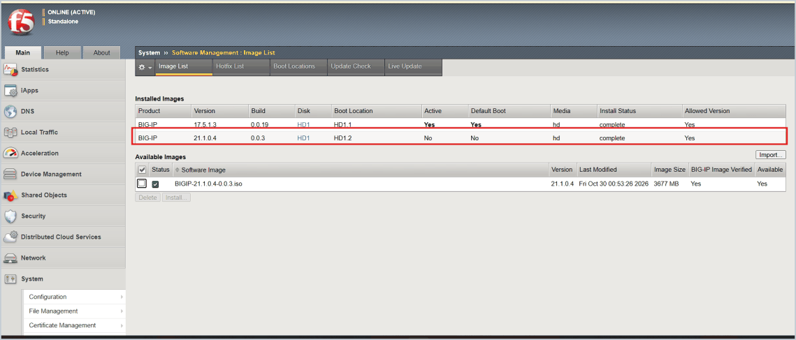
Figure 10 — Target version installed on HD1.2
06Reactivate the License
Reactivate the license before booting into the new version. The license Service Check Date must be the same as, or later than, the License Check Date of the target software version.
- Navigate to System › License and click Re-activate.
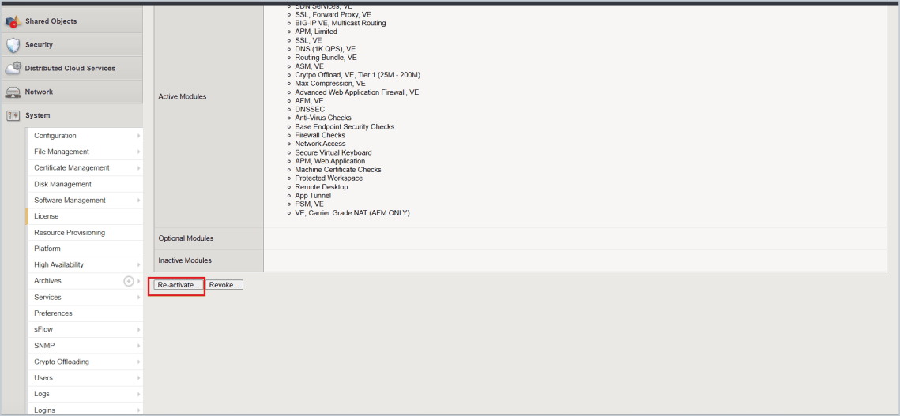
Figure 11 — License page – Re-activate - Select the Activation Method: Automatic if the device has outbound internet access, or Manual. This example uses Manual. Click Next.
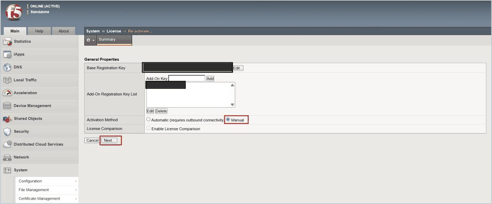
Figure 12 — Selecting the activation method (registration keys redacted) - Copy the dossier text from Step 1: Dossier, then click the link in Step 2: Licensing Server to open activate.f5.com. Do not close the Configuration utility page.
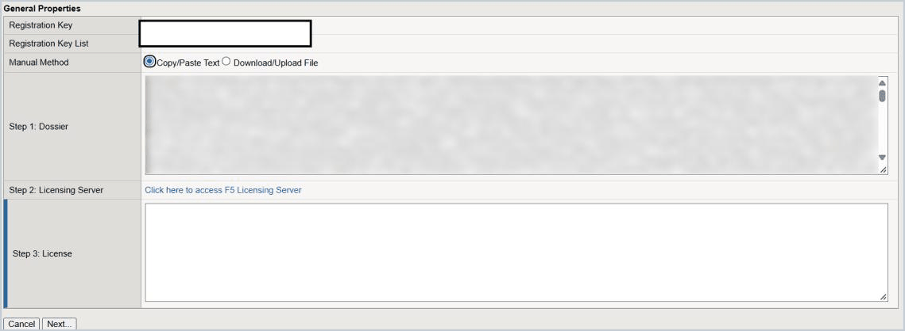
Figure 13 — Manual activation – dossier and licensing server link (dossier redacted) - On the F5 activation page, paste the dossier into Enter Your Dossier and click Next.
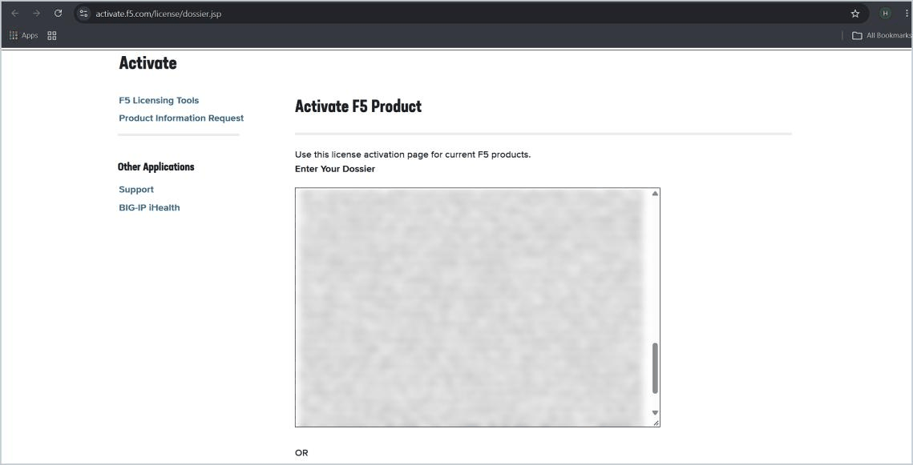
Figure 14 — F5 Product Activation – entering the dossier (dossier redacted) - On the terms and conditions page, select the check box to accept and click Next.
- The license key text is displayed. Copy the complete license text.
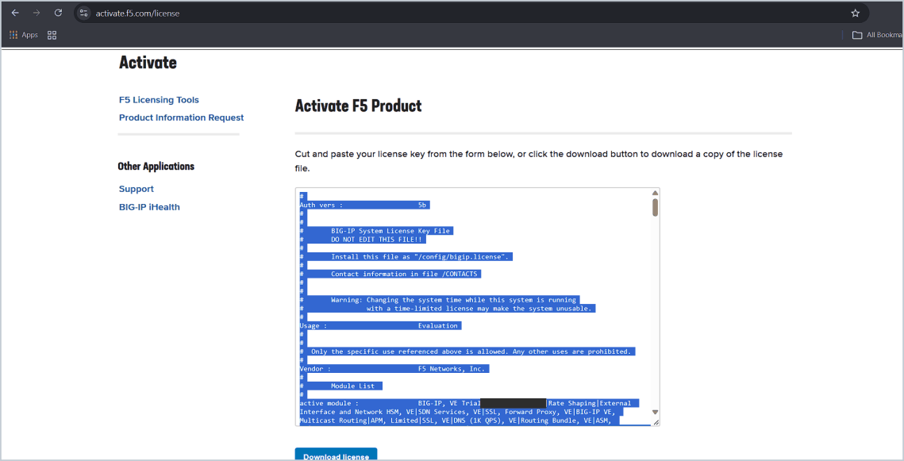
Figure 15 — License key generated by the F5 licensing server (key redacted) - Return to the Configuration utility, paste the license into Step 3: License and click Next.
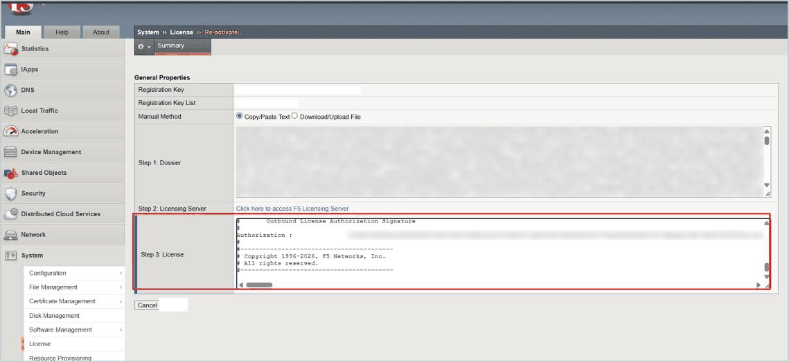
Figure 16 — Pasting the license into Step 3 (licensing data redacted) - Click Next to complete the reactivation. This takes approximately 2–3 minutes.
07Activate the New Boot Location
- Navigate to System › Software Management › Boot Locations and click the boot location that holds the newly installed version (HD1.2 in this example).
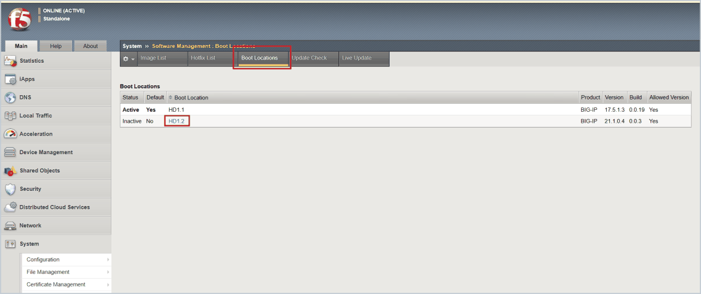
Figure 17 — Boot Locations – selecting HD1.2 - Review the General Properties to confirm the source and target versions. Set Install Configuration to Yes or No based on the changes made since the image was installed (see the next section). This example uses No.
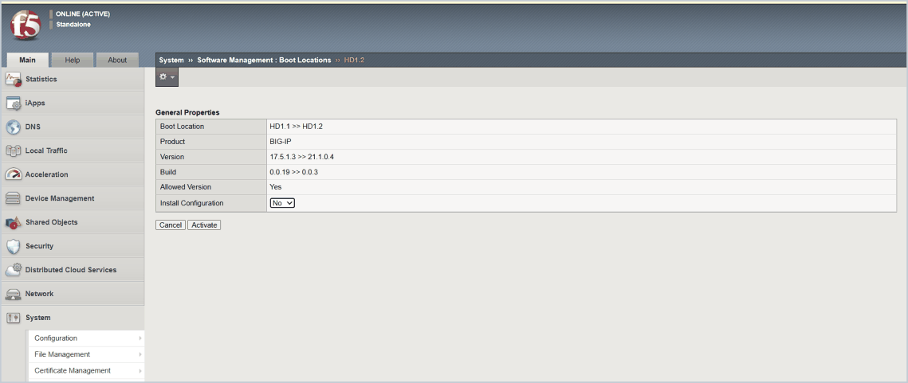
Figure 18 — Boot location properties – Install Configuration set to No - Click Activate, then click OK to confirm.
- The device reboots into the new version. Boot-up can take 15–20 minutes.
Activating the boot location reboots the device. On a standalone device this interrupts traffic for the duration of the reboot.
08Install Configuration: Yes vs No
When activating a boot location, the Install Configuration option controls whether the configuration is copied from another volume before the system boots.
When to choose “No” (default)
| Scenario | Explanation |
|---|---|
| Immediate upgrade | You have just installed the new software (21.1.0.4) on HD1.2 and are rebooting into it straight away. The configuration was already copied during the software installation. |
| No recent changes | You installed the software earlier (for example, a few days ago) and have not made any configuration changes on the active volume (HD1.1) since then. |
| Rolling back or downgrading | You are booting back into an older volume that already holds its own working configuration from before the upgrade. Choosing Yes during a downgrade can fail or cause compatibility issues. |
| Clean slate | You intentionally want the target volume to boot with whatever configuration (or blank/default state) is already saved on it. |
When to choose “Yes”
| Scenario | Explanation |
|---|---|
| Delayed reboot with configuration changes | You installed the software on HD1.2 earlier (for example, during a pre-staging window days before) and changed the active HD1.1 configuration afterwards. Selecting Yes and choosing HD1.1 as the source volume copies those latest changes before booting. |
| Copying from another volume | You want to use the configuration from a different boot volume instead of the one already stored on HD1.2. |
| Automatic copy was disabled | Automatic configuration copying is disabled through the liveinstall.moveconfig or liveinstall.saveconfig database keys, so the new volume was created without your configuration. |
09HA Pair Upgrade Sequence
For an HA pair, follow the standalone procedure on one device at a time, in this order:
- Start with the standby device and complete the upgrade on it.
- When the upgrade is complete, fail over traffic from the active device to the upgraded device.
- Verify traffic on the newly active device, then perform the upgrade on the other device, which is now standby.
- When both devices are upgraded, verify traffic and fail back to the original active device if required.
Device state at each stage
Example for a pair where Device A is initially active and Device B is standby.
| Stage | Device A | Device B | Action |
|---|---|---|---|
| Start | Active – 17.5.1.3 | Standby – 17.5.1.3 | Pre-checks and backups on both devices |
| Step 1 | Active – 17.5.1.3 | Standby – upgraded to 21.1.0.4 | Upgrade Device B |
| Step 2 | Standby – 17.5.1.3 | Active – 21.1.0.4 | Fail over to Device B and verify traffic |
| Step 3 | Standby – upgraded to 21.1.0.4 | Active – 21.1.0.4 | Upgrade Device A |
| Step 4 | Active – 21.1.0.4 | Standby – 21.1.0.4 | Fail back (if required) and verify traffic |
While the two devices run different software versions, avoid configuration changes and do not synchronize the configuration between them.
10Post-Upgrade Validation
After the upgrade, confirm the following and compare the results with the pre-upgrade baseline.
| Check | What to confirm |
|---|---|
| Software version | The target version is running from the new boot location (System › Software Management). |
| Virtual servers (VIPs) | Virtual server count and availability status match the pre-upgrade baseline. |
| Pools and nodes | Pool and node counts and member status match the pre-upgrade baseline. |
| License | The license is active and all expected modules are licensed (System › License). |
| HA status (HA pairs) | Failover state is as expected on both devices and the device group is in sync once both are upgraded. |
| Monitoring | Monitor the device and application traffic for 24–48 hours after the upgrade. |
11References
- F5 product documentation (techdocs.f5.com): release notes and upgrade guides for your target version
- MyF5: software downloads and support
- F5 Product Activation (activate.f5.com)
This procedure was demonstrated in a lab environment. Always follow F5’s official documentation and your organization’s change management process when working on production systems. F5 and BIG-IP are trademarks of F5, Inc.